23/11/2026
24 de 26 casos aprovados (92,31%), 1 em verificação e 1 bloqueado. A suíte do backend teve 70 de 70 testes aprovados.
Revalidação local em 23/11/2026, horário de Brasília, com Chrome, Django 5.2.19, Python 3.15.2 e MySQL 8.4.13 isolado.
Pendências de aceitação: auditoria completa de acessibilidade (TC-24) e execução com Docker (TC-26).
Registro da revalidação localRelatório PDFLog pytest da execução anteriorRespostas da API na execução anterior
| Caso | Situação | Resultado e evidências |
|---|---|---|
| TC-01 Infraestrutura / MySQL | APROVADO | HTTP 200; status=ok e database=ok. |
| TC-02 Migrações / seis entidades | APROVADO | Seis tabelas InnoDB; migrações aplicadas; check sem pendências. |
| TC-03 Cadastro de cliente | APROVADO | O formulário de cadastro retornou HTTP 201, iniciou a sessão de cliente e abriu a página de agendamento. |
| TC-04 Validação do cadastro e perfil | APROVADO | API rejeitou senha fraca/divergente (400); perfil administrador enviado no cadastro não elevou privilégios. |
| TC-05 Login dos perfis e logout | APROVADO | Três perfis acessados na interface; senha incorreta 401; logout revogou refresh em teste API. |
| TC-06 Perfil e troca de senha | APROVADO | API: telefone alterado; senha trocada (204); senha antiga e access anterior rejeitados (401). Tela Meu perfil não percorrida. |
| TC-07 Cadastro da barbearia | APROVADO | O painel salvou nome e cidade com HTTP 200. Os valores persistiram após recarregar e foram confirmados na API pública. TC-07_barbearia.png api_resultados.json Prumo_Revalidacao_Local_2026-11-23.txt |
| TC-08 Profissionais | APROVADO | API: criou profissional, desativou, verificou ausência pública e reativou; desativado ao final. |
| TC-09 Serviços | APROVADO | API: criou serviço, editou preço/duração e desativou; ausência pública verificada. Catálogo capturado na interface. |
| TC-10 Disponibilidade | APROVADO | API: dois blocos criados, um removido e redução de slots comprovada; bloco restante removido ao final. |
| TC-11 Duração e horários livres | APROVADO | API consultada com serviços de 30 e 60 minutos; interface apresentou horários. Regra de duração também coberta pelo pytest. |
| TC-12 Horário inválido | APROVADO | Data passada e horário fora do expediente rejeitados com 400. |
| TC-13 Reserva pela interface | APROVADO | Reserva 24 criada pela interface: 24/11/2026 10:00, João, corte, R$ 50 e 30 min; SQL pendente e confirmado. TC-13_reserva_final_confirmada.png TC-13_reserva_pendente.png |
| TC-14 Conflito entre clientes | APROVADO | Outro cliente tentou o horário da reserva 24 e recebeu 400. SQL final sem sobreposições ativas. |
| TC-15 Concorrência MySQL | APROVADO | Três testes concorrentes aprovados em MySQL real, incluídos nos 70 testes. JUnit identifica cada caso. |
| TC-16 Histórico e isolamento | APROVADO | Dois clientes consultados; reserva 24 ausente para o outro cliente; filtros e histórico registrados. |
| TC-17 Cancelamento e liberação | APROVADO | Reserva 25 cancelada pela API e 27 pela interface; horário liberado. Reserva já iniciada 23: cancelamento 400. |
| TC-18 Agenda do barbeiro | APROVADO | Hoje, semana e histórico consultados; confirmação de João registrada; filtros de período/status consultados na API. TC-18_agenda_semana.png TC-18_historico_barbeiro.png api_resultados.json |
| TC-19 Transições de status | APROVADO | 24: pendente para confirmado na interface de João. 26: confirmado para concluído via API admin (simulação). Reabertura de cancelado e concluído: 400. |
| TC-20 Autorização | APROVADO | Cliente sem permissão: 403; outro barbeiro consultando: 404 e alterando: 403. Reserva 24 permaneceu confirmada. |
| TC-21 Relatórios administrativos | APROVADO | Relatório por João, datas e confirmado mostrou a reserva 24. SQL distingue R$ 47 concluídos simulados de R$ 50 confirmados. TC-21_dashboard.png TC-21_relatorio_confirmados.png api_resultados.json |
| TC-22 Preço e duração históricos | APROVADO | Reserva 25 manteve R$ 35 e 30 min após serviço passar a R$ 47 e 45 min. |
| TC-23 Responsividade | APROVADO | Reservas criadas em 375, 768 e 1366 px; scrollWidth igual à largura. Reservas auxiliares canceladas. |
| TC-24 Acessibilidade | EM VERIFICAÇÃO | Os 31 campos do painel têm rótulo. O Chrome confirmou o nome acessível dos 11 campos corrigidos. A auditoria completa segue pendente. A execução anterior também registrou foco visível e confirmação de reserva por teclado. TC-24_confirmacao_teclado.png TC-24_teclado_foco.png Prumo_Revalidacao_Local_2026-11-23.txt |
| TC-25 Renovação e revogação JWT | APROVADO | A API real confirmou renovação após 401, uma única renovação para três requisições simultâneas e revogação do token no logout. |
| TC-26 Docker / nuvem | BLOQUEADO | Docker indisponível no ambiente. Build, verificação de saúde em contêiner e implantação em nuvem seguem pendentes. |
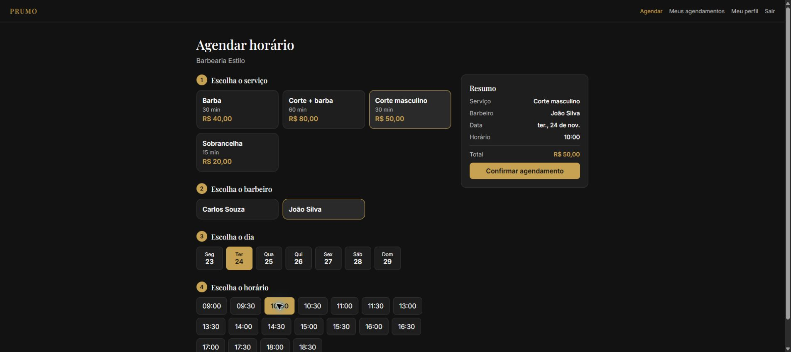
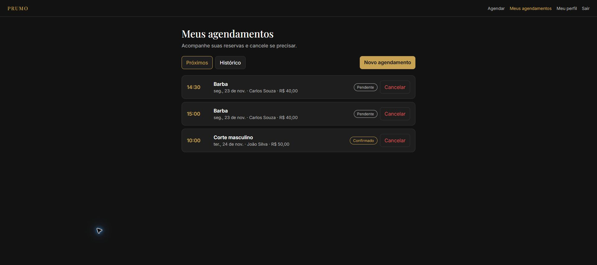
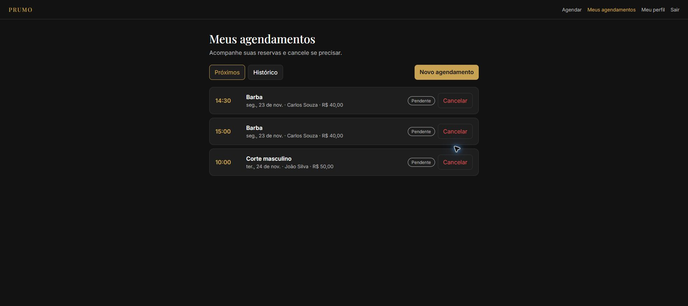
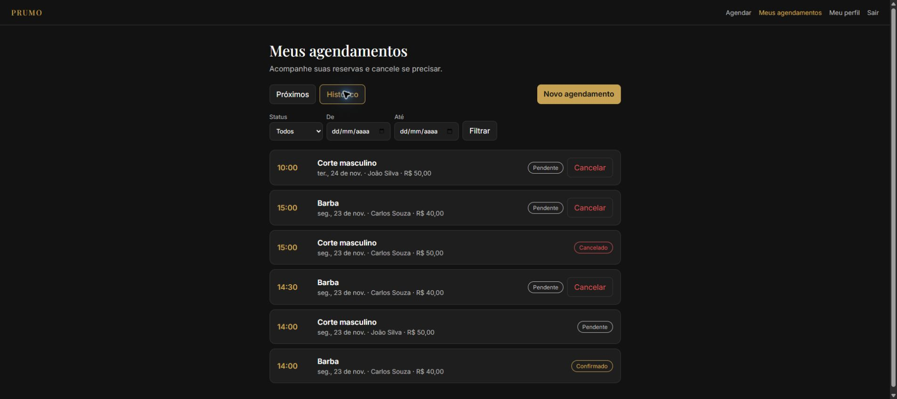
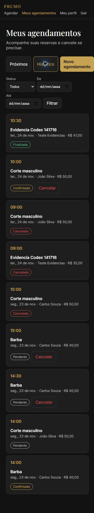
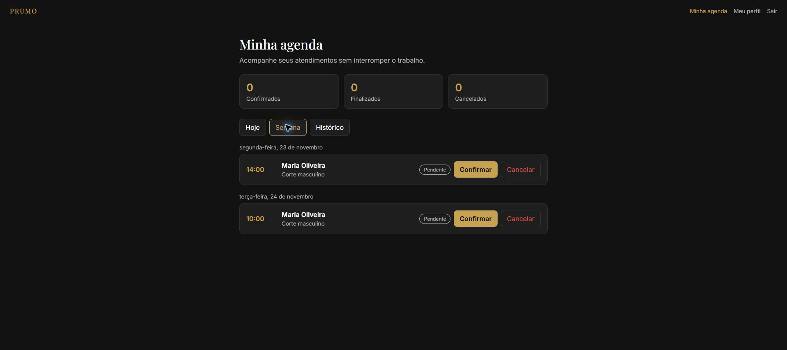
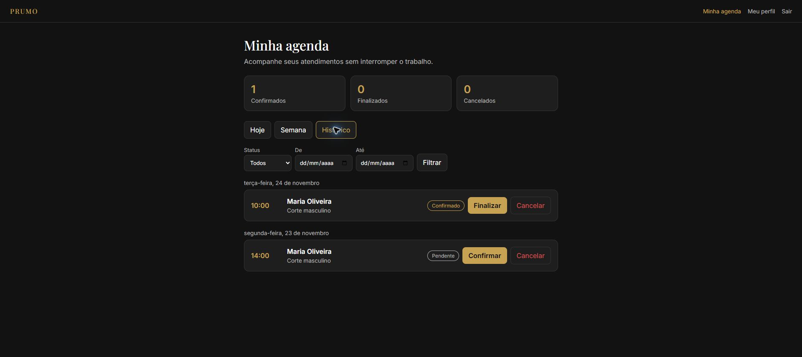
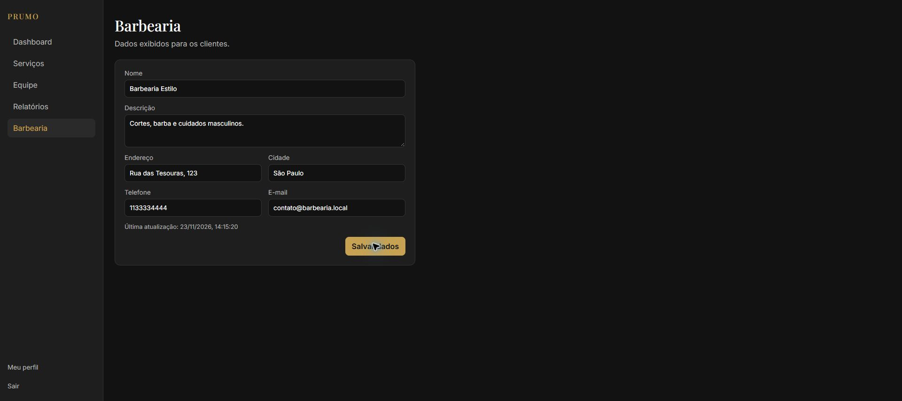
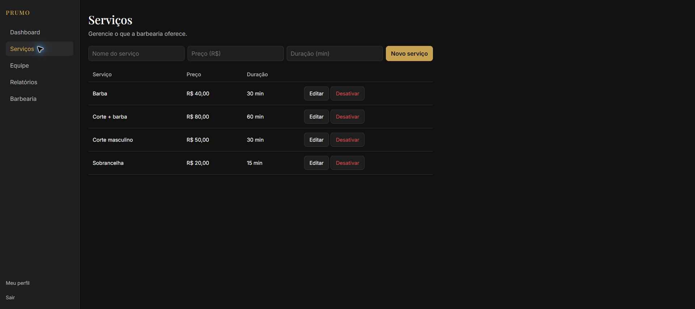
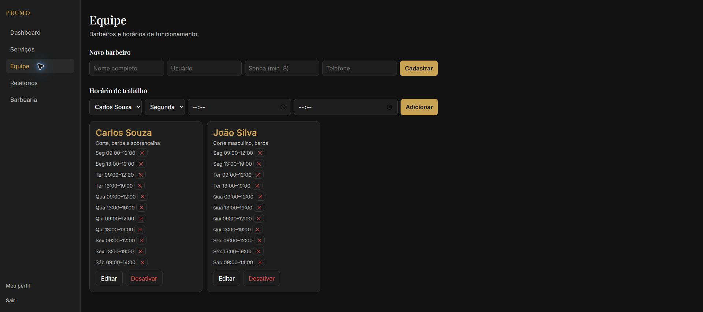
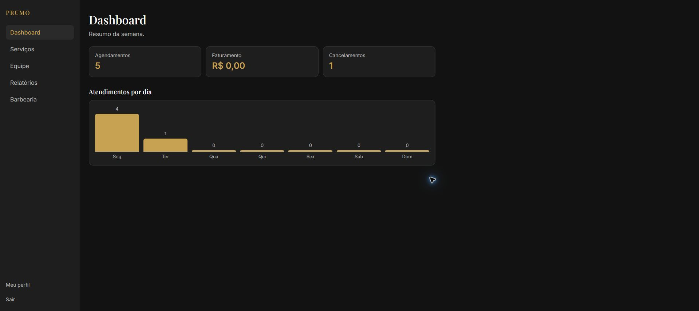
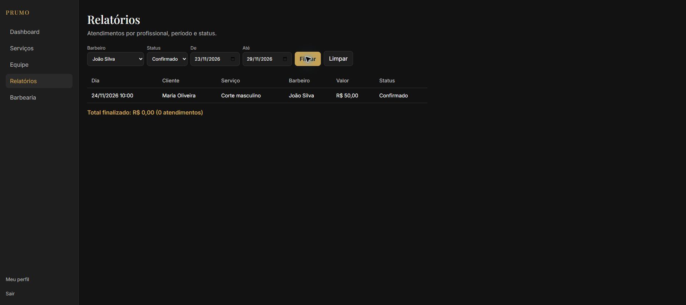
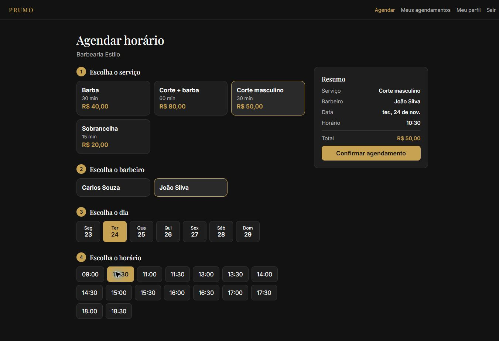
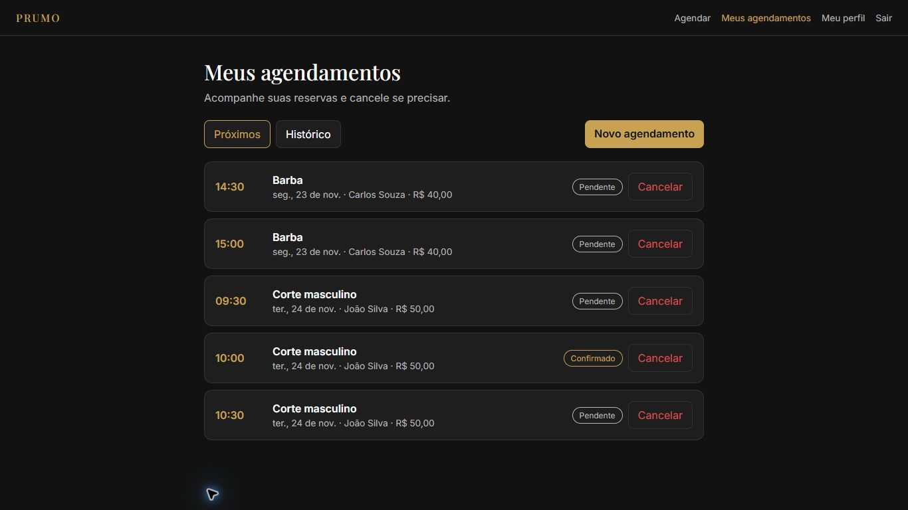
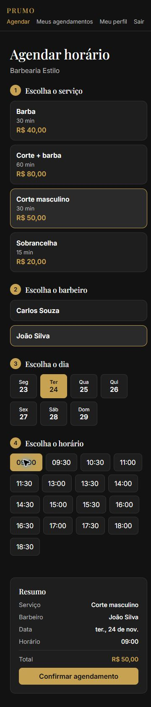
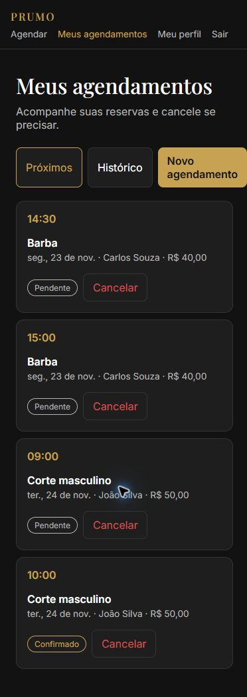
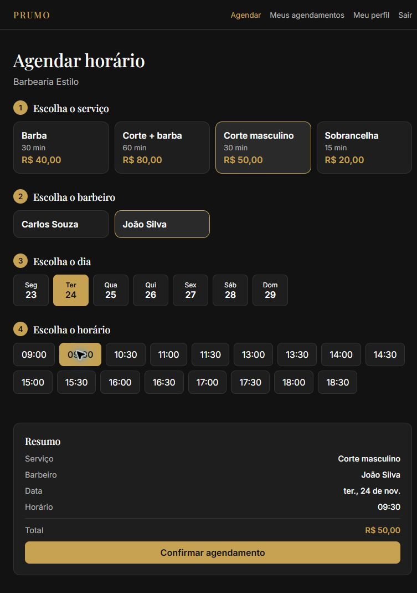
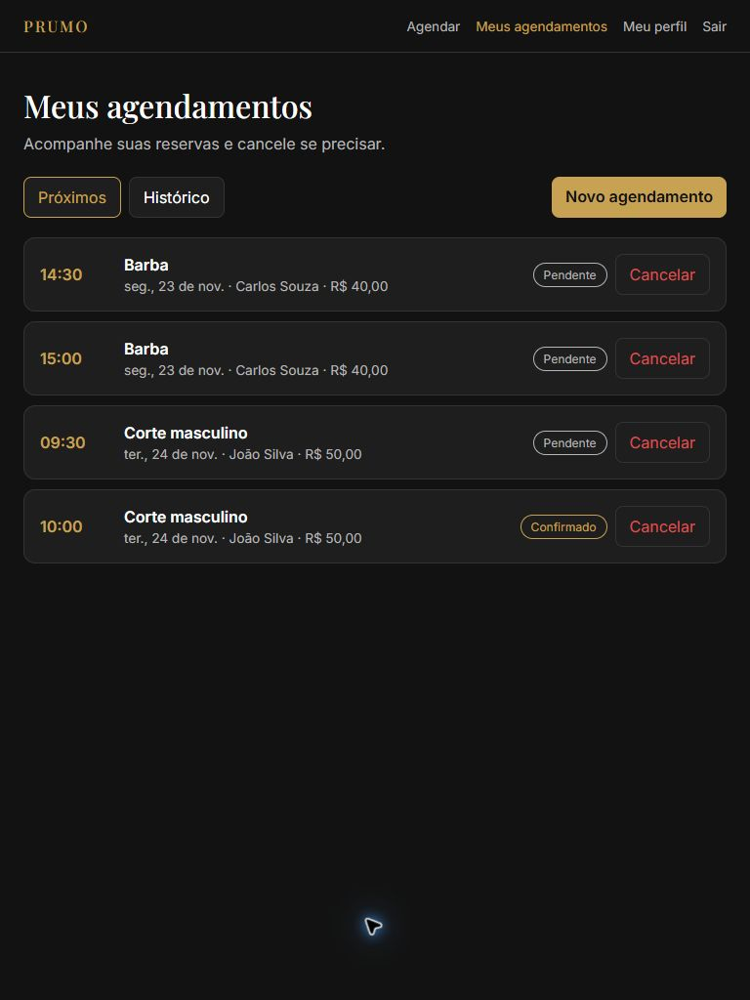
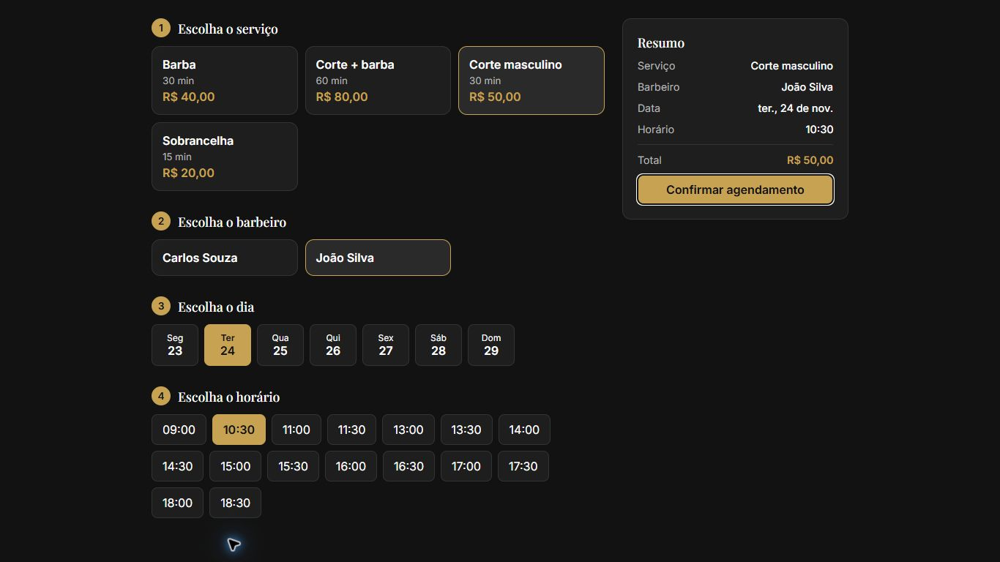
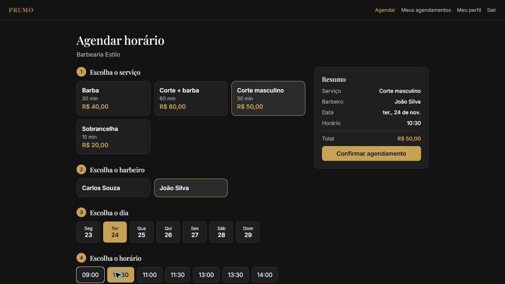
PRUMO - EVIDÊNCIAS DE EXECUÇÃO - 23/11/2026 Abra LEIA_ME.html para navegar nas evidências ou Relatorio_Execucao.pdf para o resumo. 24 de 26 casos aprovados (92,31%), 1 em verificação e 1 bloqueado. A suíte do backend teve 70 de 70 testes aprovados. Execução anterior da suíte: 70 passed, 0 failed, 0 skipped, 52 warnings em 84,16 s. Os 3 testes de concorrência estão incluídos nos 70. Revalidação local em 23/11/2026, horário de Brasília, com Chrome, Django 5.2.19, Python 3.15.2 e MySQL 8.4.13 isolado. Registro local: 09_Consolidacao/Prumo_Revalidacao_Local_2026-11-23.txt RESERVAS E DADOS DA EXECUÇÃO ANTERIOR 24: jornada principal, confirmada, João, 24/11/2026 10h, R$ 50, 30 min. 25: cancelamento/preço histórico, cancelada. 26: conclusão SIMULADA, R$ 47; permanece no histórico e afeta o faturamento demonstrativo. 27, 28, 29: responsividade; canceladas, horários liberados. Serviço 36 e profissional 36 foram criados para testes e desativados; blocos auxiliares removidos. Clientes fictícios 81-84 permanecem registrados; senhas aleatórias não incluídas nos entregáveis. As reservas e contas anteriores foram preservadas. LIMITES Pendências de aceitação: auditoria completa de acessibilidade (TC-24) e execução com Docker (TC-26). Vídeo funcional narrado e publicação no YouTube não realizados. A pasta 02_Banco_Dados contém as capturas disponíveis do banco. A revalidação local corrigiu os rótulos dos formulários administrativos. Na execução anterior, não houve alteração no código ou nova migração. migrate --check substituiu migrate, pois não havia migração pendente. O Python da Microsoft Store não iniciou sob as restrições da sessão; os testes usaram Python 3.12.14 com dependências em work/test-packages. Os servidores existentes foram reutilizados. HEAD legível; git status indisponível por restrição de acesso/worktree. Integridade das fontes registrada por SHA-256; não se afirma checkout limpo. Avisos pytest: ausência da pasta staticfiles, 52 repetições; nenhum teste falhou. Duas tentativas iniciais do roteiro API foram corrigidas: sucesso 204 de troca de senha e telefone fictício já usado. São problemas da preparação do roteiro, não defeitos atribuídos ao produto. A execução final com telefone único passou. Rastreabilidade: logs com códigos de saída, respostas da API, capturas do banco e manifesto SHA-256. Fonte do roteiro: chat Desenvolvimento Barbearia App e matriz https://docs.google.com/document/d/1r-l9uKmfwnSDNI9DHn1za3FfwX7b5SkENzQiFXoVL4Y/edit